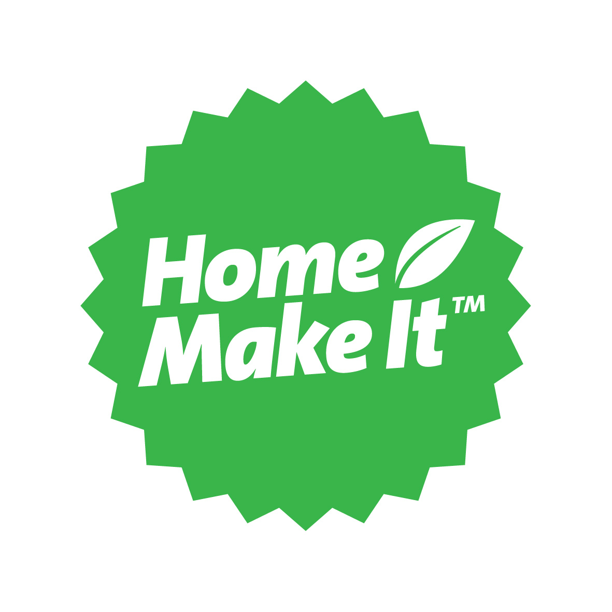
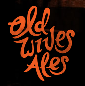

The Victorian Amateur Brewing Championships (Vicbrew 2016) will be held on 10th & 11th September 2016 at the Belgian Beer Café Eureka, 5 Riverside Quay, Southbank Melbourne. Melways reference: 2F E7 .
Please note the planned changes for Vicbrew 2016 for entrants, judges and stewards.
Placing (1st, 2nd or 3rd) in any category at Vicbrew 2016 qualifies entrant to submit an entry, in the same category, at AABC 2016 Adelaide.
Online Entries:
Online Entry Registration is available for Vicbrew 2016 From
August 1st via compmaster http://www.compmaster.com.au
NOTE: Online entries will still need to be delivered to a Vicbrew 2016
collection centre by Early Saturday 20/08/2016
Entries may be submitted upto Saturday 20th August 2016 at the following collection points:
|
Champion Beer of Show
|
Champion Brewer of Show
|
Best Club of Show
|
11. Stout Category Sponsor
|
Best Novice Brewer |
|
|
7. American Pale Ale Sponsor  |
Vicbrew 2016
Entry Collection Points |
|
|
||
| 13. India Pale Ale Category Sponsor
|
|
|
16. Wheat & Rye Beer Sponsor  18. Specialty Beer Category Sponsor |
GEELONG
164 Bellerine St Geelong VIC 3220
|
|
1. Low Alcohol Category Sponsor |
2. Pale Lager Category Sponsor
10. Porter Category Sponsor
|
14. Strong Ale Category Sponsor 12. Strong Stout Category Sponsor |
4. Amber & Dark Lager Sponsor |
20. Cider |
|
3. Pilsener Category Sponsor |
||
NOTE: That for Vicbrew 2016 and AABC 2016 the AABC 2015 Style Guidelines will be used.
Categories and Styles list for Vicbrew
2016
AABC 2016 Styleguides
in pdf format, one page per style, to be used at Vicbrew 2016.
AABC 2016 Styleguides in pdf
format, condensed version.
Beer Judging Form to be used
at Vicbrew 2016
Mead Judging Form to be used
at Vicbrew 2016
Cider Judging Form to be used
at Vicbrew 2016
We hope to see you at Vicbrew 2016.